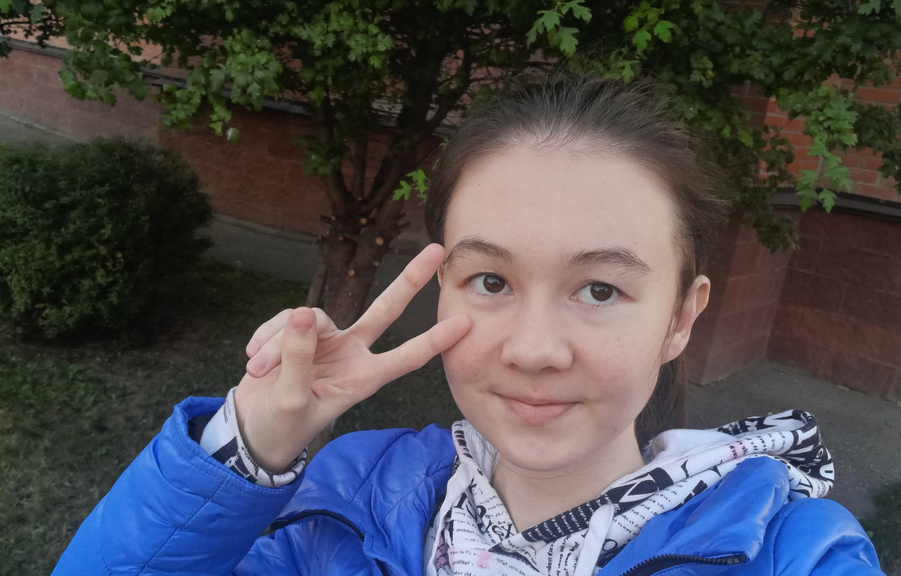

Даминдарова Диана Раяновна
ФиКЛ ВШЭ, БКЛ-232
мой вк
родной город: Казань
тг: @anemosd
школа "СОлНЦе"
тг-канал (там ничего нет но будет)
Люблю Азию, бадминтон, k-/c-drama, лёгкую музыку, штуки в стиле фолк и древность.
Недостижимая мечта: машина времени(()(()
Side interest: биомеханика, - всегда интересно осознать новое про то, как устроено движение и как нелогично спорт-блогеры строят свои занятия.
Топ 3 моих любимых (не)дорамы:
Топ 3 моих любимых факта:
• Sound of magic!
•Четверть всех костей человека находится в стопах..
• Невероятно солнечно!
•Город Чунцин в Китае по площади равен Австрии..
• Теория большого взрыва!
•Крокодилы очень мило передвигаются и могут бегать галопом (как лошади)!
я хотела сделать раздел с анекдотами на страничке, но пусть лучше будет одно видео и всё на этом